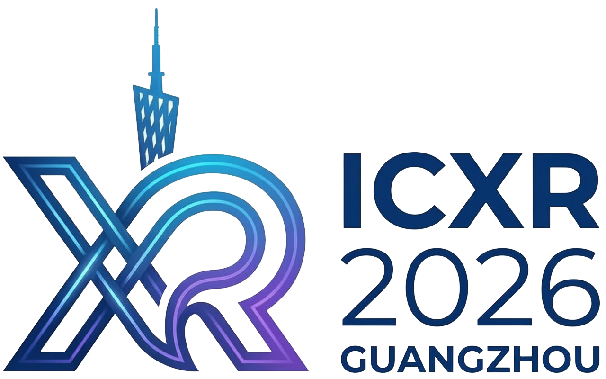

<!-- header.html -->
<link href="https://fonts.googleapis.com/css2?family=Montserrat:wght@500;600;700&display=swap" rel="stylesheet">

<nav class="ismar-nav">
    <div class="nav-container">
        <div class="nav-logo">
            <a href="index.html">
                
            </a>
        </div>

        <div class="nav-links">
            <a href="index.html" class="nav-item">Home</a>
            
            <div class="dropdown">
                <button class="dropbtn">Committee <span class="arrow">▼</span></button>
                <div class="dropdown-content">
                    <a href="committeeSO.html">Steering Committee</a>
                </div>
            </div>

            <div class="dropdown">
                <button class="dropbtn">Contribute <span class="arrow">▼</span></button>
                <div class="dropdown-content">
                    <a href="callForPapers.html">Call for Papers</a>
                </div>
            </div>
        </div>
    </div>
</nav>

<style>
    /* 外部导航条：负责背景色和全宽 */
    .ismar-nav {
        background-color: #ffffff;
        box-shadow: 0 2px 10px rgba(0,0,0,0.05);
        font-family: 'Montserrat', sans-serif;
        position: sticky;
        top: 0;
        z-index: 1000;
        width: 100%;
    }

    /* 内部容器：负责限制宽度并居中 */
    .nav-container {
        max-width: 1200px; /* 您可以根据需要调整这个数值，比如 1400px */
        margin: 0 auto;    /* 核心代码：让容器在水平方向居中 */
        padding: 0.2rem 2rem;
        display: flex;
        align-items: center;
        justify-content: flex-start; /* 内容依然靠左对齐，但在容器内部 */
        gap: 4rem;         /* Logo 和菜单之间的间距 */
    }

    .nav-logo {
        display: flex;
        align-items: center;
    }
    .nav-logo img {
        height: 55px;
        width: auto;
    }

    .nav-links {
        display: flex;
        gap: 2.5rem;
        align-items: center;
    }

    .nav-item, .dropbtn {
        color: #4a2312;
        text-decoration: none;
        font-weight: 600;
        font-size: 0.95rem;
        text-transform: uppercase;
        background: none;
        border: none;
        cursor: pointer;
        padding: 0.2rem 0;
        display: flex;
        align-items: center;
        gap: 6px;
        transition: color 0.3s;
        letter-spacing: 0.5px;
    }

    .nav-item:hover, .dropdown:hover .dropbtn {
        color: #8b4513;
    }

    .arrow {
        font-size: 0.7rem;
        opacity: 0.7;
    }

    .dropdown {
        position: relative;
    }

    .dropdown-content {
        position: absolute;
        background-color: #ffffff;
        min-width: 220px;
        top: 100%;
        left: 0;
        display: none;
        box-shadow: 0 10px 25px rgba(0,0,0,0.1);
        z-index: 200;
        border-top: 3px solid #4a2312;
        padding: 0.2rem 0;
    }

    .dropdown-content a {
        display: block;
        padding: 0.2rem 1.5rem;
        color: #4a2312;
        text-decoration: none;
        font-size: 0.9rem;
        font-weight: 500;
        transition: background 0.2s;
    }

    .dropdown-content a:hover {
        background-color: #f8f5f2;
        color: #8b4513;
    }

    .dropdown:hover .dropdown-content {
        display: block;
    }

    /* 移动端适配 */
    @media (max-width: 850px) {
        .nav-container {
            gap: 1.5rem;
            padding: 0.4rem 1rem;
        }
        .nav-links {
            gap: 1rem;
        }
    }
</style>
